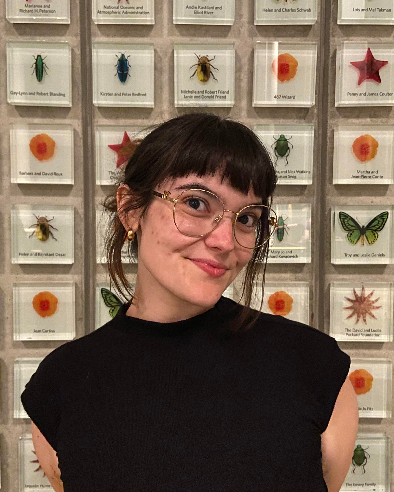

Hi, I'm Linda!
I'm a Psychology Honors student at The University of Texas at Austin
currently in the process of applying for graduate programs in both Developmental Psychology and Education.
Currently, some of my research interests include casual learning, mathematical reasoning, and how math curriculum
can be shaped to benefit both of these.
Outside of academics, I have several hobbies including baking, painting,
sewing, crochet, knitting, photography, and more! Check out my gallery to see some of what I've been working on.